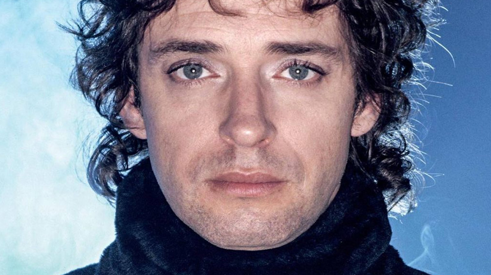

Gustavo Cerati
Gustavo Adrián Cerati (Buenos Aires, Argentina, 11 de Agosto de 1959- septiembre de 2014), fue un músico, cantautor, compositor y productor discográfico argentino, vocalista y compositor de Soda Stereo, considerado uno de los más influyentes y reconocidos músicos del rock latinoamericano.
Kiara Racioppi
Desde pequeño estuvo ligado al ambiente musical. Sus primeros referentes fueron grupos como The Police, Queen y TheCure, también algunos solistas como David Bowie, Luis Alberto Spinetta, Brian May y Ritchie Blackmore.
Comienzos
Soda
Stereo
En 1982 estableció relación con Héctor Zeta Bosio, ambos compartían los mismos gustos, sueños musicales y así comenzaron la búsqueda para formar un grupo punk rock inspirado en The Police. En esta búsqueda pre-Soda integraron la banda The Morgan, luego el grupo Stress y Proyecto Erekto junto a Andrés Calamaro. Finalmente los dos músicos comenzaron a proyectar la formación de una banda en la que tocarían temas propios. En ese momento conocen a Charly Alberti con quien formaron el trío Los Estereotipos. Luego de un breve período en el que probaron distintas formaciones, terminaron por preferir la forma de trío y cambiaron al nombre de Soda Stereo. La formación definitiva fue: Gustavo Cerati (voz y guitarra), Zeta Bosio (bajo y coros) y Charly Alberti (batería). Junto a Soda Stereo Gustavo grabó siete discos de estudio: Soda Stereo (1984), Nada Personal (1985), Signos (1986), Doble Vida (1988), Canción Animal (1990). Dynamo (1992), Sueño Stereo (1995), también una edición de álbum unplugged, Comfort y Música para volar (1996) y Me verás volver - Hits y más (2007) el cual es una compilación de las mejores canciones de la banda remasterizadas en ese mismo año.
No solo hubieramos sido nada sin ustedes, sino con toda la gente que estuvo a nuestro alrededor desde el comienzo. Algunos siguen hasta hoy. ¡Gracias... totales
Gustavo Cerati
No solo hubieramos sido nada sin ustedes, sino con toda la gente que estuvo a nuestro alrededor desde el comienzo. Algunos siguen hasta hoy. ¡Gracias... totales
Gustavo Cerati
Carrera
Solista
Gustavo se fue iniciando como solista mucho antes de la disolución definitiva de Soda Stereo. Participó en distintos proyectos con Richard Colleman, Charly García y Daniel Melero. Luego de la definitiva separación de la banda se dedicó a la experimentación electrónica. En junio de 1999 vio la luz su primer álbum solista: Bocanada. El mismo fue alabado por la crítica, siendo considerado hasta hoy como uno de sus discos de mayor calidad musical. En el 2001 realiza la banda sonora de la película +Bien y ese mismo año se realiza a grabación de lo que sería el disco 11 episodios sinfónicos, que contiene versiones de temas clásicos de su carrera acompañado por una orquesta sinfónica.
Finales
El 15 de mayo de 2010, luego de presentar un espectáculo de su último álbum publicado llamado ”Fuerza Natural” en Caracas, Venezuela, Cerati sufrió un infarto cerebral. Fue trasladado al Centro Médico Docente La Trinidad y días después se supo que realmente se trataba de un ACV (accidente cerebrovascular). Debido a la gravedad del cuadro, fue intervenido quirúrgicamente, y los especialistas decían que no volveria a ser el mismo. En junio es trasladado a Argentina. Algunos de sus amigos decían que el artista habría movido sus labios y su cabeza tras escuchar sus propias canciones. En octubre de 2012 Cerati ingresó a la Clínica ALCLA, pero persistió el mismo estado neurológico. El 4 de noviembre de 2014 el cantante falleció tras pasar 4 años en coma, el fallecimiento se produjo sin sufrimiento.